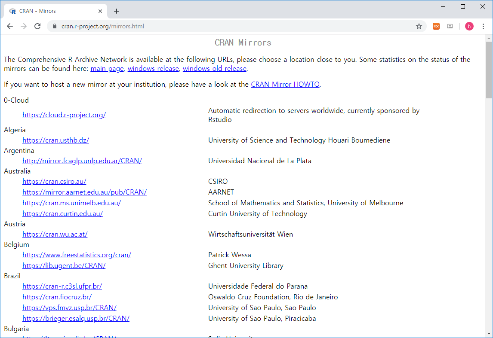
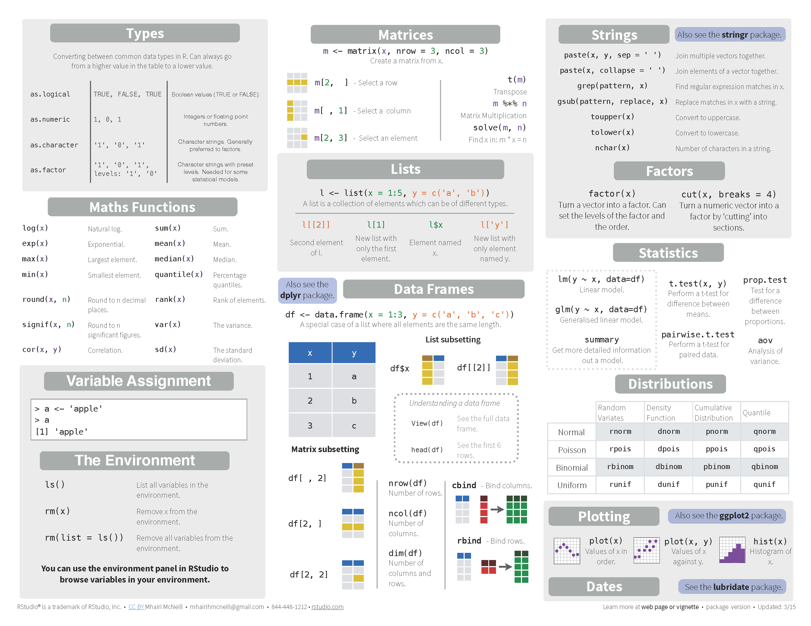
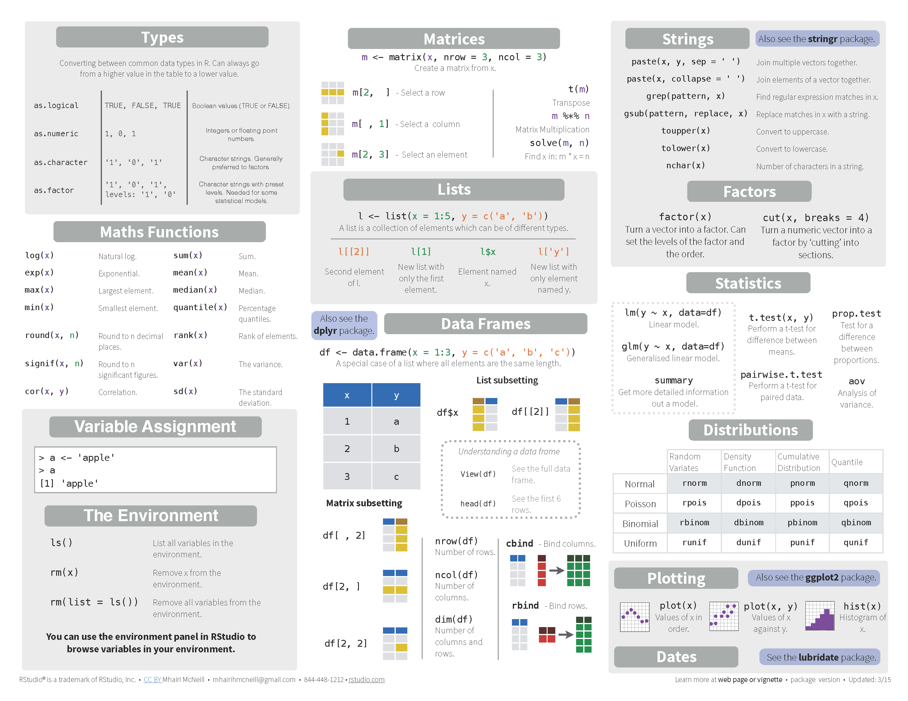

Chapter 2 R basics
2.1 What is R / Rstudio

- R is a programming language that runs computations (https://www.r-project.org/)
- RStudio is an integrated development environment (IDE) that provides an interface for the programming (https://www.rstudio.com/)
2.2 R / Rstudio installation
Install R first and then install RStudio second
R




Rstudio


2.3 Rstudio interface

2.4 Keyboard shortcuts
참고사이트
- https://support.rstudio.com/hc/en-us/articles/200711853-Keyboard-Shortcuts
- Tools –> Keyboard shortcut Quick Reference (Alt + Shift + K)
코드편집창 이동 (Ctrl+1) 콘솔창 이동(Ctrl+2)
한 줄 실행 (Ctrl+Enter)
주석처리 (Ctrl + Shift + C)
- Starting with a hashmark (‘#’), everything to the end of the line is a comment
실습
- 코드편집창에서 다음 입력

- 단축키 Ctrl + enter로 코드 실행
- 단축키 Ctrl + 2로 커서 콘솔창으로 이동
- x값 x+y값 확인
- 단축키 Ctrl + 1로 코드편집창 이동
- 단축키 Ctrl + Shift + C 사용
2.5 R programming basics and terminology
- Console: 명령어 입력하는 창
- Code: R 프로그래밍 변수/제어문 모음
- Objects (개체, variable): 값이 (데이터) 저장되는 장소
- Data types: Integers, doubles/numerics, logicals, and characters.
- Object (Variable) types:
- Vectors: 값들의 모임 combine function c() EX: c(6, 11, 13, 31, 90, 92)
- Factors: 범주형 데이터 저장 장소
- Data frames: 2D matrix 형태 데이터 자장 장소
- Conditionals (조건, 제어):
- if: ==, & (AND), | (OR) Ex: (2 + 1 == 3) & (2 + 1 == 4)
- for, while: 반복 수
- Functions (함수, commands): 특정 일 수행, 함수이름 - 입력값 (arguments) - 출력값 (output) 으로 구성
2.6 Set working directory
- 시작 전 항상 작업 디렉토리 설정
- 예를 들어 c: 아래 새로운 디렉토리 rstat01 을 만들고 작업공간으로 설정
- 또는 아래와 같이 RStudio 메뉴 에서 설정

2.8 Variables and values
- R is a programming language
- Assignment operator (
<-OR=)- Valid object name
<-value - 단축키:
Alt + -(the minus sign)
- Valid object name
- 내장 변수 Built-in variables
- 변수이름 작명법
- Characters (letters), numbers, “_”, “.”
- A and a are different symbols
- Names are effectively unlimited in length
i_use_snake_case <- 1
otherPeopleUseCamelCase <- 2
some.people.use.periods <- 3
And_aFew.People_RENOUNCEconvention <- 4- 자동 완성 기능 (Tab completion) in RStudio
2.9 Variable type of (storage) mode

2.10 Variable - Vectors
- Combine function
c(): Concatenating elements end to end
- 인덱싱: Subsets of the elements of a vector
2.11 Functions
- Function define
- Usage
- Terminology
- function name:
my_sine - parameter:
x - argument:
pi - return value:
y
- function name:
- Built-in functions
- Arguments separated by commas
- Tab completion
2.13 Help
- R의 장점 중 하나 (예제 포함)
2.14 RStudio workspace


2.15 R packages
- R comes ready loaded with various libraries of functions called packages
- ex) sum() is in the “base” package and sd() in the “stats” package
- The packages can be found in numerous server locations on the web called repositories
- The Comprehensive R Archive Network (CRAN) http://cran.r-project.org/web/views/
- Bioconductor specialised in genomics http://www.bioconductor.org/packages/release/bioc/

- UsingR package installation

- UsingR package loading
- R 설치 디렉토리
- R 패키지 설치 디렉토리

2.16 Data sets
- Packages include accompanying data sets
- R has a datasets package that is loaded automatically
- The data function produces a copy of dataset in user’s workspace
2.17 Cheatsheet
 
